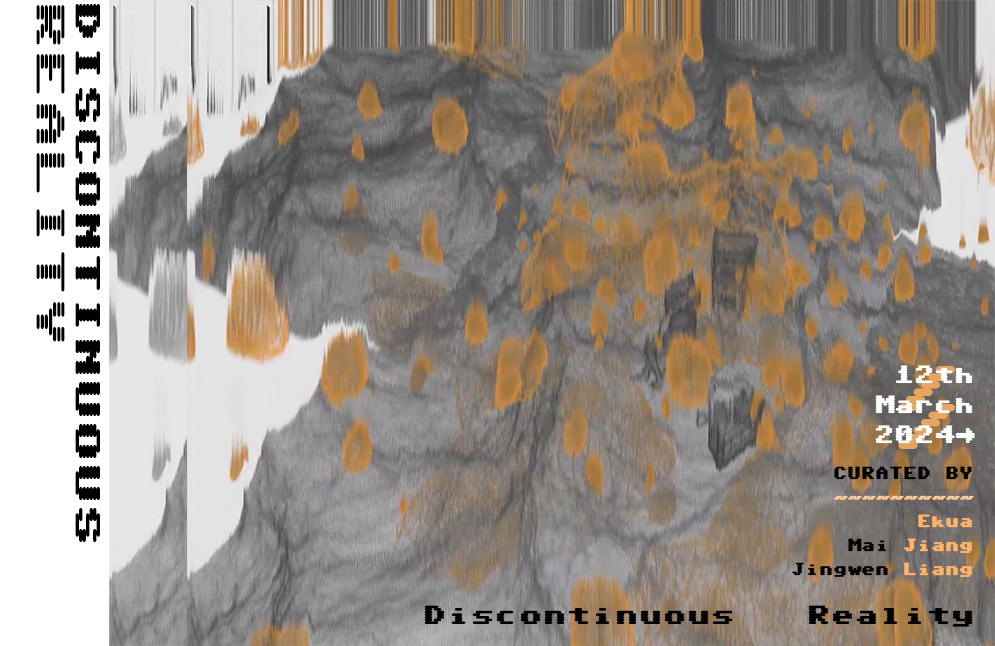

Ekua is a cursed participant in online identity. 'The other side of the curse is the blessing' is how Ekua describes the technological development of the Internet, and Ekua confronts current situation with the same attitude. Ekua explores the possibilities of the Internet's extended reality in her own particular capacity, combining post-humanism and cyborgs to create a performance art practice that explores how the existence and life of virtual identities can survive in the outside world from the internet perspective.
Mai Jiang
Mai Jiang is a media artist and photographer working with moving images, photography, computation, and new media. Her practice connects enquires about the nature of the photographic medium with recreation of geographically based senses and memories. Through her practice of reinterpreting and abstracting digital images, her intention aims to question the visibility and authenticity of photography through images. Mai brings inspiration from her journals and combines local landscape with stories, memories and personal experiences gathered from her journey. Her works are intent on visualizing moments in photography that disappear in memory over time from a private and quiet point of view. Mai has worked on the 'Discontinuous Reality' collaborated with artist Jingwen Liang with the purpose of exploring the limitless and development of new existentialism. Her work involves digital retouching, evoking memories of the twilight zone between representation and reality and show her research about the new landscape theory of stationary viewing behavior in high-speed moving vehicles.
Jingwen Liang
Jingwen Liang is a Concept Artist working for Multi-Media and Multidisciplinary inquiry. Her work focuses on the exploration of new technology and validity around human identity. Jingwen has worked on the 'Discontinuous Reality' project collaborated with artist Mai Jiang with the purpose of exploring the limitless and development of new existentialism, discussing on how the development of Web3 has given rise to a vision of new territories that counter colonialism and elitism. Jingwen's work shows her promotion of the expansion of artistic boundaries in the contemporary art discourse. Jingwen's current work reflects on the social difficulties faced by Asian communities affected by the development of virtual reality and the internet. She also uses a wide range of Asian cultural symbols and cybercultural references in her work.
mai&dao